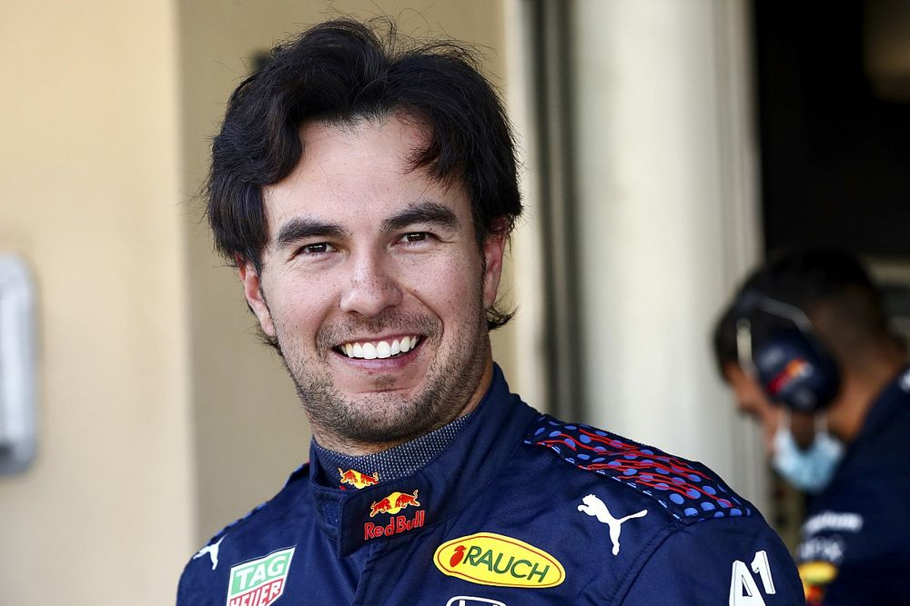

Red Bull Racing es una escudería austriaca de Fórmula 1 con base en Milton Keynes, propiedad de la empresa de bebidas energéticas Red Bull.
Max Emilian Verstappen es un piloto de automovilismo neerlandés nacido en Bélgica. Es hijo de Jos Verstappen, expiloto de F1 de nacionalidad neerlandesa, y de Sophie Kumpen, también expiloto y karter de origen belga.

Sergio Michel Pérez Mendoza también conocido como Checo, es un piloto de automovilismo mexicano. Inició su carrera en monoplazas en 2004. Tres años más tarde fue campeón de Fórmula 3 Británica. Debutó en GP2 Series en 2009 y al año siguiente fue subcampeón. Hizo su debut en Fórmula 1 en 2011 con Sauber. font-family: Arial
Por dios es un papucho, su cara parece tallada por los mismos ángeles
Te invito a seguir a estos perros del automovilismo en sus redes sociales: